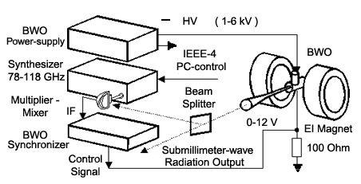

Instruments 400-1200 GHz range 400-1200 GHz range
Frequency stabilization system for back-wave oscillators (BWO)
of 400-1200 GHz range
History of BWO PLL development

Block-diagram of submillimeter wave frequency synthesizer.
The BWO is adjusted inside either Permanent or Electro Magnet (Device 015) and fed from High Voltage Power Supply (Device 014).
The system performs stabilization of sumbillimeter-wave radiation frequency against harmonic of radiation of millimeter-wave
synthesizer, so the function of controlling the source is passed to the synthesizer. The synthesizer is one of the crucial parts
of the system since the basic properties of output submillimeter-wave radiation such as spectrum purity and bandwidth, frequency
stability and accuracy, scanning abilities and step-width etc. are determined by the corresponding properties of the synthesizer but
multiplied by the number of the harmonic used for PLL stabilization. The synthesizer and consequently output submillimeter-wave radiation
is computer controlled through standard GPIB interface. Another crucial element of the system is specially developed in our
laboratory broad-band quasi-optical multiplier-mixer (Device 006). The multiplier-mixer consists of a planar Schottky diode,
mounted at the end of a ridged 3-millimeter waveguide. The diode is placed at the focal point of a semiparabolic mirror illuminated
by submillimeter-wave radiation. Once the mixer is properly adjusted, no further tuning is required.
Synchronizer (Device 012) includes
low noise intermediate frequency amplifier, phase sensitive detector, output
amplifier and serving electronics. For the first time this system was installed
and used for the high resolution spectroscopy at Cologne's
University (Germany) and later spread all over the world from Canada, to
Japan. A sub-Doppler spectral resolution, a few kilohertz accuracy of frequency
measurements, availability of non-stop single frequency scan length up to
200 GHz with a
minimum step of 500 Hz, were demonstrated.
Example of broadband molecular spectrum study in the Terahertz rage with the use of the system described.
Example of molecular spectra studies with sub-Doppler resolution using the system described with LHe cooled bolometer.
Terahertz spectrum of oxygen study with the use of the system in combination with RAD gas cell.
Illustration of BWO-based spectrometer advantages compared to high resolution FIR FT spectrometer.
|